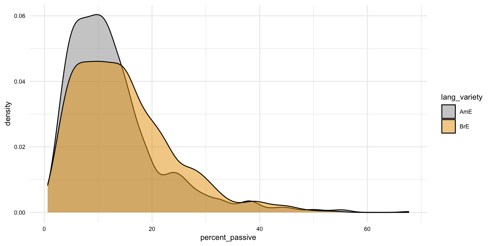

Overview
In this Recipe we will explore appropriate methods for summarizing variables in datasets given the number and informational values of the variable(s). We will build on our understanding of how to summarize data using statistics, tables, and plots.
We will cover the following topics:
- Summary overviews of datasets with
skimr - Summary statistics with
dplyr - Creating Quarto tables with
knitr - Creating Quarto plots with
ggplot2
In Lab 3, you will put these skills into practice to provide a descriptive assessment of dataset that includes statistics, tables, and plots using Quarto and R.
Concepts and strategies
In this Recipe, we will use the PassiveBrownFam dataset from the corpora package (Evert 2023). This dataset contains information on the passive voice usage in the Brown family of corpora. The dataset contains 11 variables and 2,449 observations.
I have assigned this dataset to the object brown_fam_df and have made minor modifications to the variable names to improve the readability of the dataset.
# Load packages
library(dplyr)
# Read the dataset from the `corpora` package
brown_fam_df <-
corpora::PassiveBrownFam |> # reference the dataset
as_tibble() # convert to a tibble
# Rename variables
brown_fam_df <-
brown_fam_df |> # pass the original dataset
rename( # rename variables: new_name = old_name
lang_variety = lang,
num_words = n.words,
active_verbs = act,
passive_verbs = pass,
total_verbs = verbs,
percent_passive = p.pass
)
# Preview
glimpse(brown_fam_df)## Rows: 2,499
## Columns: 11
## $ id <chr> "brown_A01", "brown_A02", "brown_A03", "brown_A04", "b…
## $ corpus <fct> Brown, Brown, Brown, Brown, Brown, Brown, Brown, Brown…
## $ section <fct> A, A, A, A, A, A, A, A, A, A, A, A, A, A, A, A, A, A, …
## $ genre <fct> press reportage, press reportage, press reportage, pre…
## $ period <fct> 1960, 1960, 1960, 1960, 1960, 1960, 1960, 1960, 1960, …
## $ lang_variety <fct> AmE, AmE, AmE, AmE, AmE, AmE, AmE, AmE, AmE, AmE, AmE,…
## $ num_words <int> 2080, 2116, 2051, 2095, 2111, 2102, 2099, 2069, 2058, …
## $ active_verbs <int> 164, 154, 135, 128, 170, 166, 165, 163, 153, 169, 132,…
## $ passive_verbs <int> 40, 25, 34, 25, 32, 21, 31, 19, 39, 23, 17, 10, 15, 26…
## $ total_verbs <int> 204, 179, 169, 153, 202, 187, 196, 182, 192, 192, 149,…
## $ percent_passive <dbl> 19.61, 13.97, 20.12, 16.34, 15.84, 11.23, 15.82, 10.44…You can learn more about these variables by reading the dataset documentation with ?corpora::PassiveBrownFam.
Statistical overviews
Understanding our data is of utmost importance before, during, and after analysis. After we get to know our data by inspecting the data origin, dictionary, and structure, we then move to summarizing the data.
A statistical overview of the data is a good place to start as it gives us a sense of all of the variables and variable types in the dataset. We can use the skimr package to create a statistical overview of the data, using the very convienent skim() function.
Let's create a statistical overview of the brown_fam_df dataset.
# Load packages
library(skimr)
# Create a statistical overview of the `brown_fam_df` dataset
skim(brown_fam_df)# ── Data Summary ────────────────────────
# Values
# Name brown_fam_df
# Number of rows 2499
# Number of columns 11
# _______________________
# Column type frequency:
# character 1
# factor 5
# numeric 5
# ________________________
# Group variables None
#
# ── Variable type: character ────────────────────────────────────────────────────
# skim_variable n_missing complete_rate min max empty n_unique whitespace
# 1 id 0 1 7 9 0 2499 0
#
# ── Variable type: factor ───────────────────────────────────────────────────────
# skim_variable n_missing complete_rate ordered n_unique
# 1 corpus 0 1 FALSE 5
# 2 section 0 1 FALSE 15
# 3 genre 0 1 FALSE 15
# 4 period 0 1 FALSE 3
# 5 lang_variety 0 1 FALSE 2
# top_counts
# 1 BLO: 500, Bro: 500, LOB: 500, FLO: 500
# 2 J: 400, G: 381, F: 228, A: 220
# 3 lea: 400, bel: 381, pop: 228, pre: 220
# 4 196: 1000, 199: 999, 193: 500
# 5 BrE: 1500, AmE: 999
#
# ── Variable type: numeric ──────────────────────────────────────────────────────
# skim_variable n_missing complete_rate mean sd p0 p25 p50
# 1 num_words 0 1 2165. 97.8 1406 2127 2163
# 2 active_verbs 0 1 179. 56.6 39 139 170
# 3 passive_verbs 0 1 25.7 12.9 2 16 23
# 4 total_verbs 0 1 204. 49.1 66 170 196
# 5 percent_passive 0 1 14.0 9.13 0.612 7.39 12.1
# p75 p100 hist
# 1 2200 4397 ▁▇▁▁▁
# 2 214 551 ▃▇▂▁▁
# 3 32 86 ▆▇▂▁▁
# 4 234 571 ▃▇▂▁▁
# 5 18.2 67.7 ▇▅▁▁▁The output of the skim() function contains a lot of information but it essentially has two parts: a summary of the dataset and a summary of each variable in the dataset. The summary of each of the variables, however, is grouped by variable type. Remember, each of our variables in a data frame is a vector and each vector has a type.
We have already learned about different types of vectors in R, including character, numeric, and logical. In this dataset, we are presented with a new type of vector: a factor. A factor is essentially a character vector that contains a set of discrete values, or levels. Factors can be ordered or unordered and can contain levels that are not present in the data.
Now, looking at each of the variable types, we can see that we have 1 character variable, 5 factor variables, and 5 numeric variables. Each of these variable types assume a different set of summary statistics. For example, we can calculate the mean of a numeric variable but not of a character variable. Or, we can count the number of unique values in a character variable but not in a numeric variable.
For all variables, skim() will also provide the number of missing values and the percent of non-missing values.
Inspecting the entire dataset is a good place to start but at some point we often want focus in on a set of variables. We can add the yank() function to extract the statistical overview of a set of variables by their variable types.
Let's extract the statistical overview of the numeric variables in the brown_fam_df dataset.
# Extract the statistical overview of the numeric variables
brown_fam_df |>
skim() |>
yank("numeric")── Variable type: numeric ─────────────────────────────────────────────────────────────────────────
skim_variable n_missing complete_rate mean sd p0 p25 p50 p75 p100 hist
1 num_words 0 1 2165. 97.8 1406 2127 2163 2200 4397 ▁▇▁▁▁
2 active_verbs 0 1 179. 56.6 39 139 170 214 551 ▃▇▂▁▁
3 passive_verbs 0 1 25.7 12.9 2 16 23 32 86 ▆▇▂▁▁
4 total_verbs 0 1 204. 49.1 66 170 196 234 571 ▃▇▂▁▁
5 percent_passive 0 1 14.0 9.13 0.612 7.39 12.1 18.2 67.7 ▇▅▁▁▁Summary statistics of particular variables
These summary statistics are useful but for a preliminary and interactive use, but it is oftent the case that we will want to focus in on a particular variable or set of variables and their potential relationships to other variables.
We can use the dplyr package to calculate summary statistics for a particular variable or set of variables. We can use the group_by() function to group the data by a particular variable or variables. Then we can use the summarize() function to calculate summary statistics for the grouped data.
For example, let's calculate the mean and median of the percent_passive variable in the brown_fam_df dataset grouped by the lang_variety variable.
# Mean and median of `percent_passive` grouped by `lang_variety`
brown_fam_df |>
group_by(lang_variety) |>
summarize(
mean_percent_passive = mean(percent_passive),
median_percent_passive = median(percent_passive)
)## # A tibble: 2 × 3
## lang_variety mean_percent_passive median_percent_passive
## <fct> <dbl> <dbl>
## 1 AmE 12.9 11.0
## 2 BrE 14.8 13.3The result is a 2x3 data frame which includes both the mean and median of the percent_passive variable for each of the two levels of the lang_variety variable.
The group_by() function can also be used to group by multiple variables. For example, let's calculate the mean and median of the percent_passive variable in the brown_fam_df dataset grouped by the lang_variety and genre variables.
# Mean and median of `percent_passive` grouped by `lang_variety` and `genre`
brown_fam_df |>
group_by(lang_variety, genre) |>
summarize(
mean_percent_passive = mean(percent_passive),
median_percent_passive = median(percent_passive)
)## # A tibble: 30 × 4
## lang_variety genre mean_percent_passive median_percent_passive
## <fct> <fct> <dbl> <dbl>
## 1 AmE press reportage 11.5 11.0
## 2 AmE press editorial 10.6 10.1
## 3 AmE press reviews 9.54 9.77
## 4 AmE religion 14.3 14.3
## 5 AmE skills / hobbies 14.9 13.9
## 6 AmE popular lore 14.0 12.7
## 7 AmE belles lettres 12.0 11.7
## 8 AmE miscellaneous 23.5 23.3
## 9 AmE learned 21.3 18.3
## 10 AmE general fiction 6.22 5.89
## # ℹ 20 more rowsFor numeric variables, such as percent_passive, there are a number of summary statistics that we can calculate. We've seen the R functions for mean and median but we can also calculate the standard deviation (sd()), variance (var()), minimum (min()), maximum (max()), interquartile range (IQR()), median absolute deviation (mad()), and quantiles (quantile()). All these calculations make sense for numeric variables but not for character variables.
For character variables, and factors, the summary statistics are more limited. We can calculate the number of observations (n()) and/ or the number of unique values (n_distinct()). Let's now summarize the number of observations n() grouped by the genre variable in the brown_fam_df dataset.
## # A tibble: 15 × 2
## genre n
## <fct> <int>
## 1 press reportage 220
## 2 press editorial 135
## 3 press reviews 85
## 4 religion 85
## 5 skills / hobbies 186
## 6 popular lore 228
## 7 belles lettres 381
## 8 miscellaneous 150
## 9 learned 400
## 10 general fiction 145
## # ℹ 5 more rowsJust as before, we can add multiple grouping variables to group_by(). Let's add lang_variety to the grouping and calculate the number of observations n() grouped by the genre and lang_variety variables in the brown_fam_df dataset.
# Cross-tabulation for `genre` and `lang_variety`
brown_fam_df |>
group_by(genre, lang_variety) |>
summarize(
n = n(),
)## # A tibble: 30 × 3
## genre lang_variety n
## <fct> <fct> <int>
## 1 press reportage AmE 88
## 2 press reportage BrE 132
## 3 press editorial AmE 54
## 4 press editorial BrE 81
## 5 press reviews AmE 34
## 6 press reviews BrE 51
## 7 religion AmE 34
## 8 religion BrE 51
## 9 skills / hobbies AmE 72
## 10 skills / hobbies BrE 114
## # ℹ 20 more rowsTip
The result of calculating the number of observations for a character or factor variable is known as a frequency table. Grouping two or more categorical variables is known as a cross-tabulation or a contingency table.
Now, we can also pipe the results of a group_by() and summarize() to another function. This can be to say sort, select, or filter the results. It can also be to perform another summary function. It is important, however, to remember that the result of a group_by() produces a grouped data frame. Subsequent functions will be applied to the grouped data frame. This can lead to unexpected results if the original grouping is not relevant for the subsequent function. To avoid this, we can use the ungroup() function to remove the grouping after the relevant grouped summary statistics have been calculated.
Let's return to calculating the number of observations n() grouped by the genre and lang_variety variables in the brown_fam_df dataset. But let's add another summary which uses the n variable to calculate the mean and median number of observations.
If we do not use the ungroup() function, the mean and median will be calculated for each genre collapsed across lang_variety.
# Mean and median of `n` grouped by `genre`
brown_fam_df |>
group_by(genre, lang_variety) |>
summarize(
n = n(),
) |>
summarize(
mean_n = mean(n),
median_n = median(n)
)## # A tibble: 15 × 3
## genre mean_n median_n
## <fct> <dbl> <dbl>
## 1 press reportage 110 110
## 2 press editorial 67.5 67.5
## 3 press reviews 42.5 42.5
## 4 religion 42.5 42.5
## 5 skills / hobbies 93 93
## 6 popular lore 114 114
## 7 belles lettres 190. 190.
## 8 miscellaneous 75 75
## 9 learned 200 200
## 10 general fiction 72.5 72.5
## # ℹ 5 more rowsTherefore we see that we have a mean and median calculated for the number of documents in the corpus for each of the 15 genres.
If we use the ungroup() function, the mean and median will be calculated for all genres. Note we will use the ungroup() function between these summaries to clear the grouping before calculating the mean and median.
# Number of observations for each `genre` and `lang_variety`
brown_fam_df |>
group_by(genre, lang_variety) |>
summarize(
n = n(),
) |>
ungroup() |>
summarize(
mean_n = mean(n),
median_n = median(n)
)## # A tibble: 1 × 2
## mean_n median_n
## <dbl> <dbl>
## 1 83.3 72Now we see that we have a mean and median calculated across all genres.
Before we leave this section, let's look some other ways to create frequency and contingency tables for character and factor variables. A shortcut to calculate a frequency table for a character or factor variable is to use the count() function from the dplyr package.
Let's calculate the number of observations grouped by the genre variable in the brown_fam_df dataset.
# Frequency table for `genre`
brown_fam_df |>
count(genre)## # A tibble: 15 × 2
## genre n
## <fct> <int>
## 1 press reportage 220
## 2 press editorial 135
## 3 press reviews 85
## 4 religion 85
## 5 skills / hobbies 186
## 6 popular lore 228
## 7 belles lettres 381
## 8 miscellaneous 150
## 9 learned 400
## 10 general fiction 145
## # ℹ 5 more rowsWe can also add multiple grouping variables to count() and create contingency tables.
Let's add lang_variety to the grouping and create a cross-tabulation for genre and lang_variety variables in the brown_fam_df dataset.
# Cross-tabulation for `genre` and `lang_variety`
brown_fam_df |>
count(genre, lang_variety)## # A tibble: 30 × 3
## genre lang_variety n
## <fct> <fct> <int>
## 1 press reportage AmE 88
## 2 press reportage BrE 132
## 3 press editorial AmE 54
## 4 press editorial BrE 81
## 5 press reviews AmE 34
## 6 press reviews BrE 51
## 7 religion AmE 34
## 8 religion BrE 51
## 9 skills / hobbies AmE 72
## 10 skills / hobbies BrE 114
## # ℹ 20 more rowsNote that the results of count() are not grouped so we do not need to use the ungroup() function before calculating subsequent summary statistics.
Another way to create frequency and contingency tables is to use the tabyl() function from the janitor package (Firke 2023). Let's create a frequency table for the genre variable in the brown_fam_df dataset.
## # A tibble: 15 × 3
## genre n percent
## <fct> <int> <dbl>
## 1 press reportage 220 0.0880
## 2 press editorial 135 0.0540
## 3 press reviews 85 0.0340
## 4 religion 85 0.0340
## 5 skills / hobbies 186 0.0744
## 6 popular lore 228 0.0912
## 7 belles lettres 381 0.152
## 8 miscellaneous 150 0.0600
## 9 learned 400 0.160
## 10 general fiction 145 0.0580
## # ℹ 5 more rowsIn addition to providing frequency counts, the tabyl() function also provides the percent of observations for each level of the variable. And, we can add up to three grouping variables to tabyl() as well.
Let's add lang_variety to the grouping and create a contingency table for the genre and lang_variety variables in the brown_fam_df dataset.
# Cross-tabulation for `genre` and `lang_variety`
brown_fam_df |>
tabyl(genre, lang_variety)## # A tibble: 15 × 3
## genre AmE BrE
## <fct> <dbl> <dbl>
## 1 press reportage 88 132
## 2 press editorial 54 81
## 3 press reviews 34 51
## 4 religion 34 51
## 5 skills / hobbies 72 114
## 6 popular lore 96 132
## 7 belles lettres 150 231
## 8 miscellaneous 60 90
## 9 learned 160 240
## 10 general fiction 58 87
## # ℹ 5 more rowsThe results do not include the percent of observations for each level of the variable as it is not clear how to calculate the percent of observations for each level of the variable when there are multiple grouping variables. We must specify if we want to calculate the percent of observations by row or by column.
The janitor package includes a variety of adorn_*() functions to add additional information to the results of tabyl(), including percentages, frequency, and totals.
-
adorn_percentages(): add percentages to the results oftabyl() -
adorn_pct_formatting(): format percentages to include a%sign -
adorn_ns(): add the frequency to the results oftabyl() -
adorn_rounding(): round the results oftabyl() -
adorn_totals(): add totals to the results oftabyl()
So, let's return to adding percentages to our results from the genre and lang_variety cross-tabulation. Let's calculate the by-column percentages of observations which will give ue the percent of observations for each level of the genre variable in each level of the lang_varity variable. In other words, we are aiming to assess to what degree the distribution of genre is similar or different across lang_variety.
# Cross-tabulation for `genre` and `lang_variety`
brown_genre_lang_ct <-
brown_fam_df |>
tabyl(genre, lang_variety) |> # genre x lang_variety
adorn_percentages("col") |> # by-column percentages
adorn_pct_formatting() |> # format percentages
adorn_ns("front") # add frequency (in front)
# View
brown_genre_lang_ct## # A tibble: 15 × 3
## genre AmE BrE
## <fct> <chr> <chr>
## 1 press reportage 88 (8.8%) 132 (8.8%)
## 2 press editorial 54 (5.4%) 81 (5.4%)
## 3 press reviews 34 (3.4%) 51 (3.4%)
## 4 religion 34 (3.4%) 51 (3.4%)
## 5 skills / hobbies 72 (7.2%) 114 (7.6%)
## 6 popular lore 96 (9.6%) 132 (8.8%)
## 7 belles lettres 150 (15.0%) 231 (15.4%)
## 8 miscellaneous 60 (6.0%) 90 (6.0%)
## 9 learned 160 (16.0%) 240 (16.0%)
## 10 general fiction 58 (5.8%) 87 (5.8%)
## # ℹ 5 more rowsYou can see that I assigned the results of the cross-tabulation to the object brown_genre_lang_ct. It is important to note that the results of tabyl() are data frames, albeit with a special class tabyl.
# Class of `brown_genre_lang_ct`
class(brown_genre_lang_ct)## [1] "tabyl" "data.frame"Therefore, we can apply subsequent operations to the results of tabyl() as we would any other data frame. However, we must pay attention to the variable types of the results of tabyl().
# Variable types of `brown_genre_lang_ct`
glimpse(brown_genre_lang_ct)## Rows: 15
## Columns: 3
## $ genre <fct> press reportage, press editorial, press reviews, religion, skill…
## $ AmE <chr> "88 (8.8%)", "54 (5.4%)", "34 (3.4%)", "34 (3.4%)", "72 (7.…
## $ BrE <chr> "132 (8.8%)", "81 (5.4%)", "51 (3.4%)", "51 (3.4%)", "114 (…We see that what look like numeric values in the results of tabyl() are actually character values. Just something to be aware of when working with the results of tabyl().
Creating Quarto tables
Summarizing the data is not only useful for our understanding of the data as part of our analysis but also for communicating the data in reports, manuscripts, and presentations.
One way to communicate summary statistics is with tables. In Quarto, we can use the knitr package (Xie 2023) in combination with code block options to produce formatted tables which we can cross-reference in our prose sections.
Let's work with the brown_genre_lang_ct object we created in the previous section.
To create a table in Quarto, we use the kable() function. The kable() function takes a data frame (or matrix) as an argument. The format argument will be derived from the Quarto document format ('html', 'pdf', etc.).
| genre | AmE | BrE |
|---|---|---|
| press reportage | 88 (8.8%) | 132 (8.8%) |
| press editorial | 54 (5.4%) | 81 (5.4%) |
| press reviews | 34 (3.4%) | 51 (3.4%) |
| religion | 34 (3.4%) | 51 (3.4%) |
| skills / hobbies | 72 (7.2%) | 114 (7.6%) |
| popular lore | 96 (9.6%) | 132 (8.8%) |
| belles lettres | 150 (15.0%) | 231 (15.4%) |
| miscellaneous | 60 (6.0%) | 90 (6.0%) |
| learned | 160 (16.0%) | 240 (16.0%) |
| general fiction | 58 (5.8%) | 87 (5.8%) |
| detective | 48 (4.8%) | 72 (4.8%) |
| science fiction | 12 (1.2%) | 18 (1.2%) |
| adventure | 57 (5.7%) | 87 (5.8%) |
| romance | 58 (5.8%) | 87 (5.8%) |
| humour | 18 (1.8%) | 27 (1.8%) |
To add a caption to the table and to enable cross-referencing, we use the code block options label and tbl-cap. The label option takes a label prefixed with tbl- to create a cross-reference to the table. The tbl-cap option takes a caption for the table, in quotation marks.
```{r}
#| label: tbl-brown-genre-lang-ct
#| tbl-cap: "Cross-tabulation of `genre` and `lang_variety`"
# Create a table in Quarto
kable(brown_genre_lang_ct)
```Now we can cross-reference the table with the @tbl-brown-genre-lang-ct syntax. So the following Quarto document will produce the following prose with a cross-reference to the formatted table output.
As we see in @tbl-brown-genre-lang-ct, the distribution of `genre` is similar across `lang_variety`.
```{r}
#| label: tbl-brown-genre-lang-ct
#| tbl-cap: "Cross-tabulation of `genre` and `lang_variety`"
# Print cross-tabulation
kable(brown_genre_lang_ct)
```
As we see in Table 1, the distribution of genre is similar across lang_variety.
| genre | AmE | BrE |
|---|---|---|
| press reportage | 88 (8.8%) | 132 (8.8%) |
| press editorial | 54 (5.4%) | 81 (5.4%) |
| press reviews | 34 (3.4%) | 51 (3.4%) |
| religion | 34 (3.4%) | 51 (3.4%) |
| skills / hobbies | 72 (7.2%) | 114 (7.6%) |
| popular lore | 96 (9.6%) | 132 (8.8%) |
| belles lettres | 150 (15.0%) | 231 (15.4%) |
| miscellaneous | 60 (6.0%) | 90 (6.0%) |
| learned | 160 (16.0%) | 240 (16.0%) |
| general fiction | 58 (5.8%) | 87 (5.8%) |
| detective | 48 (4.8%) | 72 (4.8%) |
| science fiction | 12 (1.2%) | 18 (1.2%) |
| adventure | 57 (5.7%) | 87 (5.8%) |
| romance | 58 (5.8%) | 87 (5.8%) |
| humour | 18 (1.8%) | 27 (1.8%) |
Dive deeper
The
kableExtrapackage (Zhu 2021) provides additional functionality for formatting tables in Quarto.
Creating Quarto plots
Where tables are useful for communicating summary statistics for numeric and character variables, plots are useful for communicating relationships between variables especially when one or more of the variables is numeric. Furthermore, for complex relationships, plots can be more effective than tables.
In Quarto, we can use the ggplot2 package (Wickham et al. 2023) in combination with code block options to produce formatted plots which we can cross-reference in our prose sections.
Let's see this in action with a simple histogram of the percent_passive variable in the brown_fam_df dataset. The Quarto document will produce the following prose with a cross-reference to the formatted plot output.
As we see in @fig-brown-fam-percent-passive-hist, the distribution of `percent_passive` is skewed to the right.
```{r}
#| label: fig-brown-fam-percent-passive-hist
#| fig-cap: "Histogram of `percent_passive`"
# Create a histogram in Quarto
ggplot(brown_fam_df) +
geom_histogram(aes(x = percent_passive))
```
As we see in Figure 1, the distribution of percent_passive is skewed to the right.
Figure 1: Histogram of percent_passive
The ggplot2 package implements the 'Grammar of Graphics' approach to creating plots. This approach is based on the idea that plots can be broken down into components, or layers, and that each layer can be manipulated independently.
The main components are data, aesthetics, and geometries. Data is the data frame that contains the variables to be plotted. Aesthetics are the variables that will be mapped to the x-axis, y-axis (as well as color, shape, size, etc.). Geometries are the visual elements that will be used to represent the data, such as points, lines, bars, etc..
As discussed in the R lesson "Visual Summaries", the aes() function is used to map variables to aesthetics and can be added to the ggplot() function or to the geom_*() function depending on whether the aesthetic is mapped to all geometries or to a specific geometry, respectively.
Take a look at the following stages of the earlier plot in each of the tabs below.
Stages
The data layer does not produce a plot but it is the foundation of the plot.
# Data layer
ggplot(brown_fam_df)The aesthetics layer does not produce a plot but it maps the variables to the aesthetics to be used in the plot.
The geometries layer produces the plot connecting the data and aesthetics layers in the particular way specified by the geometries, in this case a histogram.
# Geometries layer
ggplot(brown_fam_df, aes(x = percent_passive)) +
geom_histogram()
Choosing the right plot
Just as with tables, the type of summary we choose to communicate with a plot depends on the type of variables we are working with and the relationships between those variables.
Below I've included a few examples of plots that can be used to communicate different types of variables and relationships.
Single numeric variable
# Histogram
ggplot(brown_fam_df) +
geom_histogram(aes(x = percent_passive))
# Density plot
ggplot(brown_fam_df) +
geom_density(aes(x = percent_passive))Numeric and categorical variables
# Density plot
ggplot(brown_fam_df) +
geom_density(
aes(
x = percent_passive,
fill = lang_variety
),
alpha = 0.5 # adds transparency
)
# Boxplot
ggplot(brown_fam_df) +
geom_boxplot(
aes(
x = lang_variety,
y = percent_passive
)
)
# Violin plot
ggplot(brown_fam_df) +
geom_violin(
aes(
x = lang_variety,
y = percent_passive
)
)
Two numeric variables
# Scatterplot
ggplot(brown_fam_df) +
geom_point(
aes(
x = active_verbs,
y = passive_verbs
)
)
# Scatterplot with regression line
ggplot(
brown_fam_df,
aes(
x = active_verbs,
y = passive_verbs
)
) +
geom_point() +
geom_smooth(method = "lm")Check your understanding
- A factor is a character vector augmented to include information about the discrete values, or levels, of the vector.
- What is the difference between a frequency table and a contingency table?
- The package is used to create formatted tables in R.
- To add a geometry layer, such as
geom_histogram(), to a ggplot object the|>operator is used. - To visualize the relationship between two numeric variables, a is often used.
- When the
aes()function is added to theggplot()function, the aesthetic is mapped to all geometries.
Lab preparation
Before beginning Lab 3, learners should be comfortable with the skills and knowledge developed in the previous recipes and labs. In this lab, you will have a chance to use these skills and those introduced in this Recipe to provide a descriptive assessment of a dataset that includes statistics, tables, and plots using Quarto and R.
The additional skills and knowledge you will need to complete Lab 3 include:
- Summarizing data with
skimr - Summarizing data with
dplyr - Creating Quarto tables with
knitr - Creating Quarto plots with
ggplot2